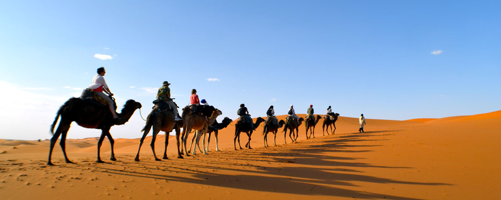

Karawan Riad
Fes, Morocco
Location
These days this is arguably the ancient medina's most up-and-coming hood thanks to the rapid regeneration of neighbouring R'cif. The installation of new plazas (best enjoyed after the sun goes down when they are at their liveliest), polished cedar-clad souks and fondouks, a renovated tannery and a soon-to-open riverside walk, all under 10 minutes' walk away, means visitors can now discover Fez's myriad secrets in a little more style. It's blessedly easy for taxi access too.
Style & Character
Soaring proportions combined with 21st-century engineering dazzle the second you walk through the door of this 17th-century palace and it's a real treat for architecture buffs. The focal point being a contemporary stone courtyard criss-crossed by tongue and groove that gives it a geometric aspect, softened by potted palms, easy chairs and a discreet, classical Arabic play list – basically it's the sort of spot you could loll about for hours joyfully doing nothing.
In the rooms artefacts from all over the world combine with traditional Moroccan furniture and Islamic design features in eye-popping splendour, the idea being to create a kind of modern-day caravanserai, though now instead of wealthy merchants stopping to rest enroute to the desert, it's a hub for intellectual travellers who like their culture served with a healthy dash of luxury.
Service & facilities
Super friendly and eager to ensure your stay is a special one for the most part, though it can feel a little stiff at times in that rather old-fashioned, liveried way. There are some odd rules too, like not serving wine in your room. Aside from this, staff invest lots of time getting to know guests and understanding their needs – Fez isn't always easy to navigate and a caring hand to push you in the right direction can make all the difference between a good stay and a great one.
The possibility to indulge in a spot of afternoon tea, or a doze beneath a glittering chandelier in a sunken library-lounge, or a rooftop terrace with breath-taking views, combined with a very good in-house restaurant and the Leelah hammam and spa (we love the spice bath and foot massage for tired feet, £25) mean there are as many good reasons for staying in as there are for heading out.
- ✔ Bar
- ✔ Laundry
- ✔ Restaurant
- ✔ Room service
- ✔ Spa
- ✔ Steam room/hammam
- ✔ WI-FI
Rooms
Karawan's seven suites are among the biggest and most lavish in town with lots of intriguing details to feast your eyes upon in the form of contemporary furniture, antique textiles and original art works. The vast, first-floor Dzhari Suite is cool and elegant with a spacious lounge, bioethanol fireplace and writing desk, that opens onto a private, lushly planted terrace (note the boudoir bathroom of gleaming black marble with a plush, velvet sofa is up a flight of stairs at mezzanine level).
But it's actually one of the cheaper rooms that remains our favourite. Snugly tucked away up on the roof it's the most private of all the rooms with an African safari feel, a sunken tub and a wonderfully shady terrace, which makes a magical setting for intimate breakfasts and dinners for two.
Food & Drink
Excellent Moroccan patisserie are made in-house and served with Mariage Frères teas – to revive or relax as needed – in by far the prettiest tea room in town (worth a visit even if you're not staying). The restaurant, headed by an innovative young Moroccan chef Outhmane, feels rather formal – it's much nicer to eat in the courtyard, or on the roof if the weather allows – but dishes up tasty Mediterranean and Moroccan dishes depending on what he's in the mood to cook that day.
It could be grilled salmon with a gingery sauce vierge one day, succulent chicken, olive and preserved lemon tagine – one of the best we've had – the next. So, while you can't choose à la carte you know you'll be getting three courses of seasonal, market fresh goodness for a fixed price of £30. Breakfast is included in the room rate and is a generous and leisurely affair of eggs your way, seasonal fruit, homemade yogurt, fresh squeezed juices, posh teas and coffees.
Price
Smaller double rooms from £165 year-round; and the more luxurious suites from £355. Breakfast included. Free Wi-Fi.
Guests with disabilities
An eighth room on the ground floor can be made up, otherwise, it's a minimum of 20 shallow steps to the first-floor rooms.
Address
21 Derb Ourbia - Medina, Fes 30000, Morocco.
00 212 614 701 345
karawanriad.com